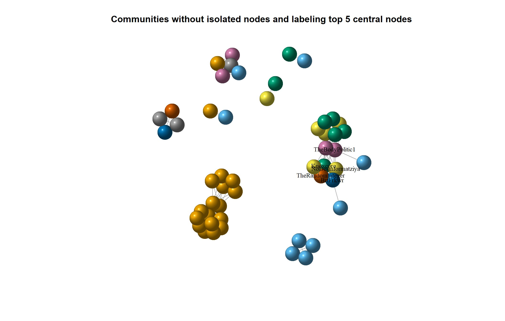
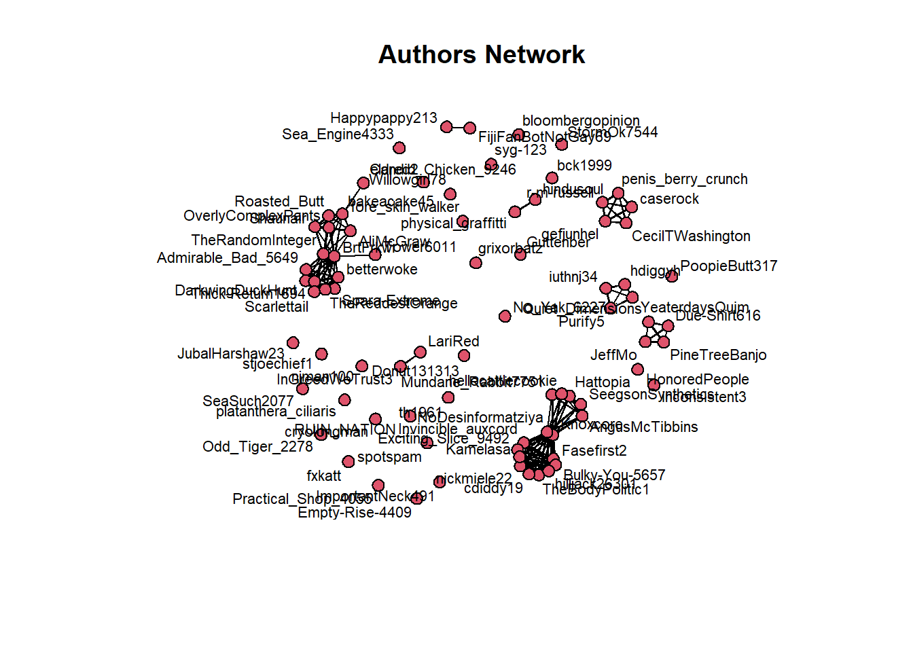
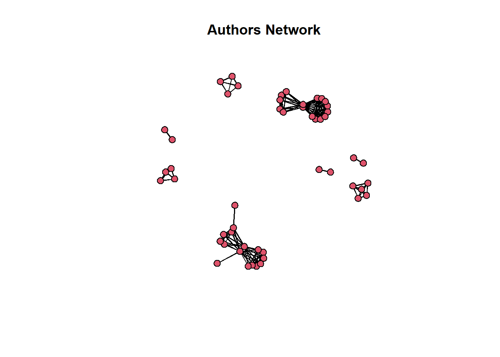
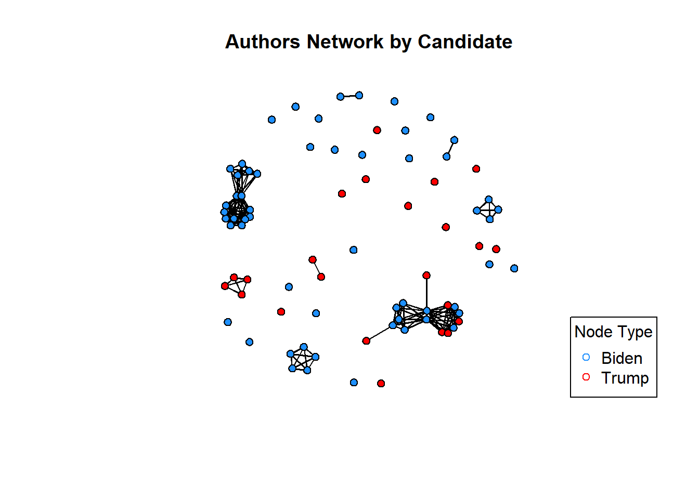
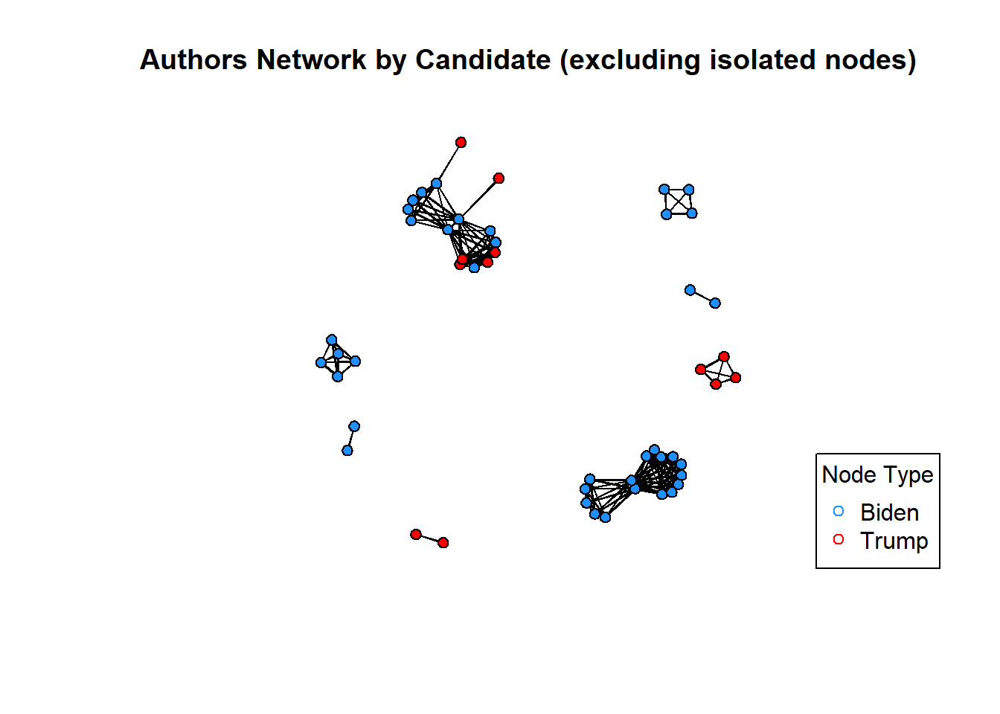
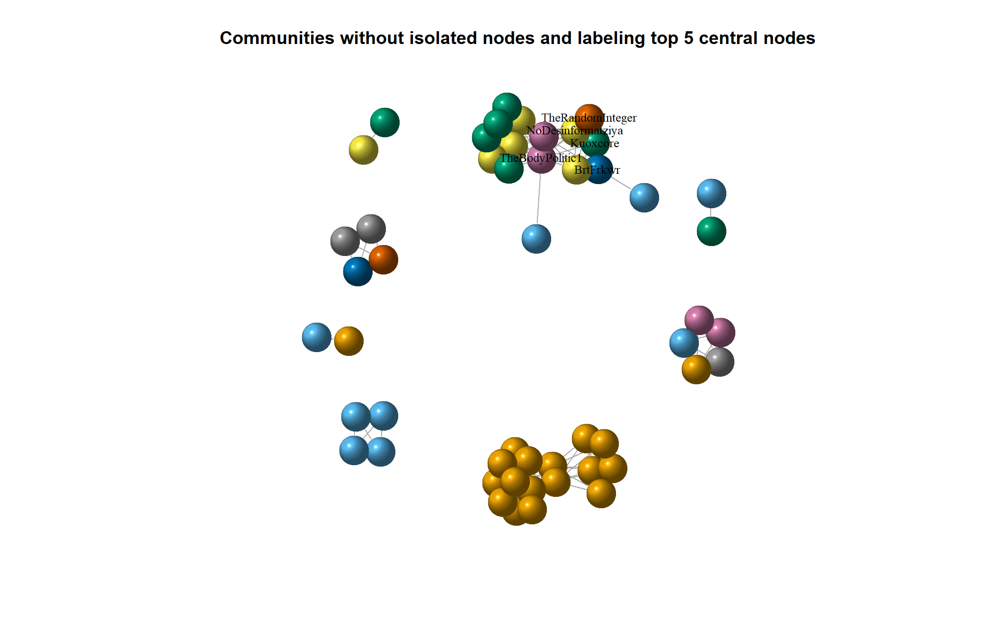
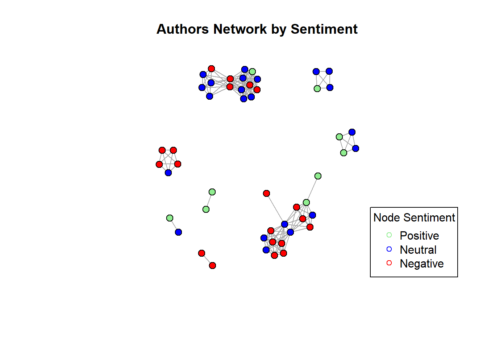

suppressWarnings({
suppressPackageStartupMessages(library(tidytext))
suppressPackageStartupMessages(library(dplyr))
suppressPackageStartupMessages(library(tidyverse))
suppressPackageStartupMessages(library(quanteda))
suppressPackageStartupMessages(library(quanteda.textplots))
suppressPackageStartupMessages(library(janitor))
suppressPackageStartupMessages(library(RCurl))
suppressPackageStartupMessages(library(data.table))
})
Network Analysis on subreddit r/politics
Introduction
Social media, including Reddit, serves as a prominent platform for discourse and community engagement. The “Politics” subreddit (r/politics) is a hub for discussions on political matters, attracting users who share news articles and express opinions (Bail, 2016).
In recent years, Reddit discussions have intensified, especially regarding U.S. politics, notably around Joe Biden and Donald Trump. Analyzing user interactions in r/politics offers insight into digital political landscapes (Conover et al., 2013).
This research aims to explore Reddit users’ connections within r/politics, focusing on Biden and Trump discussions. We seek to uncover community formation patterns and influencers through social network analysis. Specifically, we’ll examine users’ connectivity, community emergence, and the relationship between post popularity and user influence.
By addressing these questions, we contribute to understanding political discourse on Reddit and social media’s role in shaping public opinion.
Research Question
How are Reddit users connected in the “Politics” subreddit (r/politics), particularly when it comes to topics related to Biden and Trump?
Are there different communities (networks) for Biden and Trump?
How are these group of users connected based on the sentiment of their comments?
Is there a relationship between Score (net value between upvotes and downvotes) for a post, and how the user is connected to other users?
Hypothesis
This research is mainly exploratory, I am not expecting something in particular, so I don’t have an specific hypothesis, except for the research question number 4.
In relation to the fourth research question I can expect that:
H1: an user’s higher score should be highly related to a higher centrality in the network.
Data
Data Wrangling
I scraped data from the Politics subreddit (r/politics) on April 2nd 2024 using R (RedditExtractoR package) and saved the objects generated from the scrapping to csv files
This subreddit has 8.5 million users, so the data can be very extensive, however the package used here (RedditExtractoR) pulled the last 1000 post.
getwd()[1] "C:/Users/fbeta/OneDrive/Blue Cognition/Blog/R-Blog-BlueCognition/posts/Post 4 - Final Project"# Read large CSV file using fread
politik1 <- fread("politics_comments1.csv")
politik2 <- fread("politics_comments2.csv")
politik3 <- fread("politics_comments3.csv")
#Checking the structure of the data sets
glimpse(politik1)Rows: 983
Columns: 8
$ V1 <chr> "Supreme Court starts arguments as Biden administration defe…
$ date_utc <IDate> 2024-03-26, 2024-03-26, 2024-03-26, 2024-03-26, 2024-03-26…
$ timestamp <int> 1711463500, 1711463310, 1711462666, 1711462651, 1711462570, …
$ title <chr> "Supreme Court starts arguments as Biden administration defe…
$ text <chr> "", "", "", "", "", "", "", "", "", "", "", "Oral argument i…
$ subreddit <chr> "politics", "politics", "politics", "politics", "politics", …
$ comments <int> 34, 21, 194, 24, 43, 15, 150, 251, 18, 26, 10, 597, 27, 299,…
$ url <chr> "https://www.reddit.com/r/politics/comments/1bo9ce0/supreme_…glimpse(politik2)Rows: 983
Columns: 16
$ V1 <int> 1, 2, 3, 4, 5, 6, 7, 8, 9, 10, 11, 12, 13, 14, 1…
$ url <chr> "https://www.reddit.com/r/politics/comments/1bo9…
$ author <chr> "Cybertronian1512", "ban_hus", "coasterghost", "…
$ date <chr> "3/26/2024", "3/26/2024", "3/26/2024", "3/26/202…
$ timestamp <int> 1711463500, 1711463310, 1711462666, 1711462651, …
$ title <chr> "Supreme Court starts arguments as Biden adminis…
$ text <chr> "", "", "", "", "", "", "", "", "", "", "", "Ora…
$ subreddit <chr> "politics", "politics", "politics", "politics", …
$ score <int> 304, 127, 1250, 791, 421, 226, 4033, 4842, 197, …
$ upvotes <int> 304, 127, 1250, 791, 421, 226, 4033, 4842, 197, …
$ downvotes <int> 0, 0, 0, 0, 0, 0, 0, 0, 0, 0, 0, 0, 0, 0, 0, 0, …
$ up_ratio <dbl> 0.95, 0.92, 0.95, 0.96, 0.91, 0.91, 0.97, 0.97, …
$ total_awards_received <int> 0, 0, 0, 0, 0, 0, 0, 0, 0, 0, 0, 0, 0, 0, 0, 0, …
$ golds <int> 0, 0, 0, 0, 0, 0, 0, 0, 0, 0, 0, 0, 0, 0, 0, 0, …
$ cross_posts <int> 0, 0, 0, 0, 0, 0, 2, 0, 0, 1, 0, 0, 0, 1, 1, 0, …
$ comments <int> 34, 21, 194, 24, 43, 15, 150, 250, 18, 26, 10, 5…glimpse(politik3)Rows: 95,879
Columns: 11
$ V1 <int> 1, 2, 3, 4, 5, 6, 7, 8, 9, 10, 11, 12, 13, 14, 15, 16, 17, …
$ url <chr> "https://www.reddit.com/r/politics/comments/1bo9ce0/supreme…
$ author <chr> "AutoModerator", "EmmaLouLove", "ctguy54", "EmmaLouLove", "…
$ date <chr> "3/26/2024", "3/26/2024", "3/26/2024", "3/26/2024", "3/26/2…
$ timestamp <int> 1711463501, 1711465125, 1711466287, 1711466455, 1711467091,…
$ score <int> 1, 79, 41, 13, 19, 13, 7, 6, 3, 4, 1, 4, 2, 5, 5, 1, 1, 28,…
$ upvotes <int> 1, 79, 41, 13, 19, 13, 7, 6, 3, 4, 1, 4, 2, 5, 5, 1, 1, 28,…
$ downvotes <int> 0, 0, 0, 0, 0, 0, 0, 0, 0, 0, 0, 0, 0, 0, 0, 0, 0, 0, 0, 0,…
$ golds <int> 0, 0, 0, 0, 0, 0, 0, 0, 0, 0, 0, 0, 0, 0, 0, 0, 0, 0, 0, 0,…
$ comment <chr> "\r\nAs a reminder, this subreddit [is for civil discussion…
$ comment_id <chr> "1", "2", "2_1", "2_1_1", "2_1_1_1", "2_1_1_1_1", "2_1_1_1_…As we can see the the information in object “politik1” is redundant with the information in “politik2” so I won’t use “politik1” at all. “Politik2” contain information about the title of the post, author, and some numeric information like up/down votes, number of replies to the post. “politik3” contain detailed comments on each post and the hierarchical sequence of comments to each post.
For the purpose of this research we will define the users or authors to posts and comments as the nodes, and edges are defined as comments made in the same post; it does mean that the network will be undirected as I will consider only authors commenting in the same post but I won’t capture the direction of the comment (B is commenting to A post).
Let’s do some data wrangling first:
# Cleaning and wrangling
politik_df <- politik2 %>% select(-V1, -timestamp) #eliminating non-relevant columns
politik_df <- as_tibble(politik_df)
politik_df$date <- as.Date(politik_df$date, format = "%m/%d/%Y")
politik_df2 <- politik3 %>% select(-V1, -timestamp) #eliminating non-relevant columns
politik_df2 <- as_tibble(politik_df2)
politik_df2$date <- as.Date(politik_df2$date, format = "%m/%d/%Y")Looking at the comments from user “Automoderator”, it is like a Reddit moderator bot reminding rules of the forum, so I’ll delete the rows belonging to AutoModerator”. Also there are few commments where the author was “deleted”.
politik_df2 <- politik_df2[-(which(politik_df2$author %in% "AutoModerator")),]
politik_df3 <- politik_df2[-(which(politik_df2$author %in% "[deleted]")),]Let’s see how many nodes (authors/users) we got in this data set:
#first I created a count column
politik_df3 <- politik_df3 %>% mutate(countid = "1")
politik_df3$countid <- as.numeric(politik_df3$countid)
#How many authors (nodes) we have here?
length(unique(politik_df3$author))[1] 31554In the data set there are about +31k users/authors (nodes), which is way too much nodes for the purpose of my research, so I’ll select a sample of posts to analyze.
I’ll select the top 1% posts with more comments.
#first let's see the distribution of number of comments
percentiles <- quantile(politik_df$comments, probs = c(0.25, 0.50, 0.75, 0.90, 0.95, 0.99))
print(percentiles) 25% 50% 75% 90% 95% 99%
20.0 46.0 115.0 338.6 576.2 1439.1 Let’s subset the data set with the top 1% posts in terms of comments and let’s see how many posts we have.
subset_politik2 <- subset(politik_df, comments >= 1439 )
glimpse(subset_politik2)Rows: 10
Columns: 14
$ url <chr> "https://www.reddit.com/r/politics/comments/1bo5…
$ author <chr> "newsweek", "thenewrepublic", "UWCG", "twenafees…
$ date <date> 2024-03-26, 2024-03-26, 2024-03-27, 2024-03-27,…
$ title <chr> "Letitia James fires back after Donald Trump's b…
$ text <chr> "", "", "", "", "", "", "", "", "", ""
$ subreddit <chr> "politics", "politics", "politics", "politics", …
$ score <int> 12409, 28546, 32935, 25237, 13487, 14411, 17102,…
$ upvotes <int> 12409, 28546, 32935, 25237, 13487, 14411, 17102,…
$ downvotes <int> 0, 0, 0, 0, 0, 0, 0, 0, 0, 0
$ up_ratio <dbl> 0.92, 0.93, 0.91, 0.93, 0.91, 0.91, 0.91, 0.94, …
$ total_awards_received <int> 0, 0, 0, 0, 0, 0, 0, 0, 0, 0
$ golds <int> 0, 0, 0, 0, 0, 0, 0, 0, 0, 0
$ cross_posts <int> 1, 2, 5, 7, 9, 2, 3, 3, 6, 3
$ comments <int> 1476, 2018, 3564, 2419, 1523, 1677, 2291, 1668, …length(unique(subset_politik2$author))[1] 10We got a data set with 10 original posts and 10 authors, this is now a more “reasonable” data frame to analyze.
Now I need to identify these post into the “politik_df3” data set which contain all the hierarchical comments network.
subset_politik3 <- politik_df3 %>%
filter(url %in% subset_politik2$url)
#let's see the df now
glimpse(subset_politik3)Rows: 4,902
Columns: 10
$ url <chr> "https://www.reddit.com/r/politics/comments/1bo5tnj/letitia…
$ author <chr> "OokLeeNooma", "AusToddles", "dancode", "GrafZeppelin127", …
$ date <date> 2024-03-26, 2024-03-26, 2024-03-26, 2024-03-26, 2024-03-26…
$ score <int> 5480, 2444, 1054, 871, 792, 414, 212, 31, 2, 3, 8, 26, 3, 3…
$ upvotes <int> 5480, 2444, 1054, 871, 792, 414, 212, 31, 2, 3, 8, 26, 3, 3…
$ downvotes <int> 0, 0, 0, 0, 0, 0, 0, 0, 0, 0, 0, 0, 0, 0, 0, 0, 0, 0, 0, 0,…
$ golds <int> 0, 0, 0, 0, 0, 0, 0, 0, 0, 0, 0, 0, 0, 0, 0, 0, 0, 0, 0, 0,…
$ comment <chr> "\"\"Donald Trump is still facing accountability for his st…
$ comment_id <chr> "2", "2_1", "2_1_1_1", "2_1_1_1_1", "2_1_1_1_1_1", "2_1_1_1…
$ countid <dbl> 1, 1, 1, 1, 1, 1, 1, 1, 1, 1, 1, 1, 1, 1, 1, 1, 1, 1, 1, 1,…#how many nodes (authors)?
length(unique(subset_politik3$author))[1] 3869We got 982 posts but still +3.8k nodes, it is still high number of nodes.
I’ll need a different approach.
I’ll select 2 specific posts with a “median” number of comments. One post will be about Trump and another about Biden, specifically I will filter posts by containing the word “Biden” and “Trump” in the title of the post.
suppressWarnings({
#First selecting posts with "Trump" or "Biden" included in the title of the post
#Filtering the titles that contain Trump
trump_df <- politik_df %>% filter(grepl("Trump", title))
trump_df$candidate <- "Trump"
#Let's check the distribution of number of comments
percentiles_trump <- quantile(trump_df$comments, probs = c(0.25, 0.50, 0.75, 0.90, 0.95, 0.99))
print(percentiles_trump)
}) 25% 50% 75% 90% 95% 99%
30.50 74.00 206.00 575.40 1052.50 2176.34 The median comment for Trump’s post is 74 comments.Therefore I’ll select the post with 74 comments.
#Trump
trump_post <- subset(trump_df, comments == 74 )Now let’s select Biden’s post
suppressWarnings({
#Filtering the titles that contain Biden
biden_df <- politik_df %>% filter(grepl("Biden", title))
biden_df$candidate <- "Biden"
#Let's check the distribution of number of comments
percentiles_biden <- quantile(biden_df$comments, probs = c(0.25, 0.50, 0.75, 0.90, 0.95, 0.99))
print(percentiles_biden)
}) 25% 50% 75% 90% 95% 99%
28.00 66.50 171.25 464.50 907.75 1818.00 Median is 66.5 comments, let’s use the post with 67 comments.
#Biden
biden_post <- subset(biden_df, comments == 67 )Now I got the 2 main posts, let’s explore a bit those 2 posts.
#merging the previous df's
trump_biden_df <- rbind(trump_post, biden_post)
print(trump_biden_df$url)[1] "https://www.reddit.com/r/politics/comments/1bsdho2/us_election_workers_face_thousands_of_threats_so/"
[2] "https://www.reddit.com/r/politics/comments/1bsnq6l/are_black_and_brown_voters_really_fleeing_biden/" #let's identify these posts in the politik3 df (containing all the details)
subset_politik3 <- politik_df3 %>%
filter(url %in% trump_biden_df$url)
#creating a new column with the candidate related to the post
subset_politik3 <- subset_politik3 %>%
mutate(candidate = case_when(
url == "https://www.reddit.com/r/politics/comments/1bsdho2/us_election_workers_face_thousands_of_threats_so/" ~ "Trump",
url == "https://www.reddit.com/r/politics/comments/1bsnq6l/are_black_and_brown_voters_really_fleeing_biden/" ~ "Biden",
))
#let's see the df now
glimpse(subset_politik3)Rows: 119
Columns: 11
$ url <chr> "https://www.reddit.com/r/politics/comments/1bsnq6l/are_bla…
$ author <chr> "fxkatt", "AngusMcTibbins", "Knoxcore", "Hattopia", "AngusM…
$ date <date> 2024-03-31, 2024-03-31, 2024-04-01, 2024-03-31, 2024-03-31…
$ score <int> 20, 27, 3, -18, 23, -12, 18, -3, -14, 9, -7, 5, 2, 1, -4, 1…
$ upvotes <int> 20, 27, 3, -18, 23, -12, 18, -3, -14, 9, -7, 5, 2, 1, -4, 1…
$ downvotes <int> 0, 0, 0, 0, 0, 0, 0, 0, 0, 0, 0, 0, 0, 0, 0, 0, 0, 0, 0, 0,…
$ golds <int> 0, 0, 0, 0, 0, 0, 0, 0, 0, 0, 0, 0, 0, 0, 0, 0, 0, 0, 0, 0,…
$ comment <chr> "It's very possible that both Biden and Trump are losing so…
$ comment_id <chr> "2", "3", "3_1", "3_2", "3_2_1", "3_2_1_1", "3_2_1_1_1", "3…
$ countid <dbl> 1, 1, 1, 1, 1, 1, 1, 1, 1, 1, 1, 1, 1, 1, 1, 1, 1, 1, 1, 1,…
$ candidate <chr> "Biden", "Biden", "Biden", "Biden", "Biden", "Biden", "Bide…# Let's keep only the relevant columns
politik_final <- select(subset_politik3, c("url", "author", "score", "comment", "comment_id", "candidate"))
# Extracting the levels of each comment and its hierarchy
politik_final2 <- politik_final %>%
mutate(Level = str_count(comment_id, pattern = "_") + 1, # Count underscores to determine depth
ParentID = ifelse(Level > 1, sapply(strsplit(comment_id, "_"), function(x) paste(x[-length(x)], collapse = "_")), NA))
length(unique(politik_final2$author))[1] 80length(unique(politik_final2$url))[1] 2Now we got 80 nodes (authors) from the 2 posts.
Analysis
Before proceeding with the network analysis, let’s explore a bit about the authors (users).
#let's create some tables to see frequencies and totals
#first I created a count column
politik_final2 <- politik_final2 %>% mutate(countid = "1")
politik_final2$countid <- as.numeric(politik_final2$countid)
#preparing tables
library(data.table)
politik_table2 <- data.table(politik_final2)
#total posts grouped by author
count_table2 <- politik_table2 %>% group_by(author) %>% summarise(Total_posts = sum(countid))
count_table2 <- count_table2 %>% arrange(desc(Total_posts))
print(count_table2)# A tibble: 80 × 2
author Total_posts
<chr> <dbl>
1 BrtFrkwr 7
2 betterwoke 5
3 Hattopia 4
4 TheBodyPolitic1 4
5 TheRandomInteger 4
6 AngusMcTibbins 3
7 Due-Shirt616 3
8 NoDesinformatziya 3
9 TheReddestOrange 3
10 DarkwingDuckHunt 2
# ℹ 70 more rowssummary_votes <- politik_table2 %>% group_by(author) %>% summarize(Total_Score = sum(score))
summary_votes <- summary_votes %>% arrange(desc(Total_Score))
print(summary_votes)# A tibble: 80 × 2
author Total_Score
<chr> <int>
1 r-m-russell 76
2 AngusMcTibbins 68
3 OverlyComplexPants 40
4 BrtFrkwr 33
5 betterwoke 28
6 TheBodyPolitic1 24
7 penis_berry_crunch 22
8 Due-Shirt616 21
9 NoDesinformatziya 20
10 YeaterdaysQuim 20
# ℹ 70 more rows#Score as a proportion of comments
summary_score_ratio <- politik_table2 %>% group_by(author) %>% summarize(Ratio_score_per_comment = sum(score)/sum(countid))
summary_score_ratio <- summary_score_ratio %>% arrange(desc(Ratio_score_per_comment))
print(summary_score_ratio)# A tibble: 80 × 2
author Ratio_score_per_comment
<chr> <dbl>
1 r-m-russell 76
2 OverlyComplexPants 40
3 AngusMcTibbins 22.7
4 penis_berry_crunch 22
5 YeaterdaysQuim 20
6 fxkatt 20
7 grixorbatz 17
8 Sea_Engine4333 16
9 Quiet_Dimensions 14
10 hdiggyh 14
# ℹ 70 more rowsI would expect that nodes (users) with higher score and/or higher score per comment should be predominant (central) in the network.
For instance we got the following users in the top 5 in terms of score: “r-m-russell”, “AngusMcTibbins”, “OverlyComplexPants”, “BrtFrkwr” and “betterwoke”.
On the other hand here the top 5 users with highest score per comment: “r-m-russell”, “OverlyComplexPants”, “AngusMcTibbins”, “penis_berry_crunch”, and “YeaterdaysQuim”.
Now I am ready to work on this data set for the Network analysis.
#Rename level column as it represent more how deep/far is the comment
#from the initial post, we will use this later as an attribute
politik_final2 <- politik_final2 %>%
rename(distance = Level)
#identify who is commenting on the same post
politik_final2 <- politik_final2 %>%
mutate(level = substr(comment_id, 1, 2))
politik_final2$level <- str_replace_all(politik_final2$level, "_", "")
politik_final2 <- politik_final2 %>%
mutate(level2 = substr(candidate, 1, 1))
politik_final2$comment_id2 <- paste(politik_final2$level2, politik_final2$level, sep = "_")
#Now I'll create a new object by keeping only the columns I need
politik_final3 <- select(politik_final2, c(-"comment_id", -"ParentID", -"level", -"level2"))
#Will create a attribute only object to use later
politik_attributes <- select(politik_final3, c("score", "candidate", "distance"))I’ll prepare the adjacency matrix:
politik_m <- select(politik_final3, c("comment_id2", "author"))
# Identify unique names and codes
unique_names <- unique(politik_final3$author)
unique_codes <- unique(politik_final3$comment_id2)
# Create an empty adjacency matrix
adj_matrix <- matrix(0, nrow = length(unique_names), ncol = length(unique_names),
dimnames = list(unique_names, unique_names))
#Populate the adjacency matrix based on shared codes
for (i in 1:length(unique_names)) {
for (j in 1:length(unique_names)) {
# Check if names i and j have the same code
shared_code <- intersect(politik_final3$comment_id2[politik_final3$author == unique_names[i]],
politik_final3$comment_id2[politik_final3$author == unique_names[j]])
if (length(shared_code) > 0) {
adj_matrix[unique_names[i], unique_names[j]] <- 1 # Set relationship to 1
}
}
}
# I'll eliminate loops in advance
diag(adj_matrix) <- 0Network Analysis
Now let’s explore the Network.
It is important to mention that in this research we will assume an undirected network. We are only considering comments within the same post, not specific “direction” of each comment among users.
#load packages
suppressPackageStartupMessages(library(network))
library(sna)
library(statnet)
politik.n <- network(adj_matrix, directed = FALSE)
politik.n Network attributes:
vertices = 80
directed = FALSE
hyper = FALSE
loops = FALSE
multiple = FALSE
bipartite = FALSE
total edges= 158
missing edges= 0
non-missing edges= 158
Vertex attribute names:
vertex.names
No edge attributesWe got 80 nodes and 316 edges.
Let’s explore the network. I’ll calculate the census for Dyads and triads:
#Dyads and Triads census
sna::dyad.census(politik.n) Mut Asym Null
[1,] 158 0 3002sum(sna::triad.census(politik.n))[1] 82160sna::triad.census(politik.n) 003 012 102 021D 021U 021C 111D 111U 030T 030C 201 120D 120U 120C 210
[1,] 70689 0 10955 0 0 0 0 0 0 0 179 0 0 0 0
300
[1,] 337In terms of Dyads, we got 158 mutual connections and 3002 null connections.
In terms of Triads, we got 82160 triads in total: about 70k null triads, 11k open triads (one connection exist), 179 where 2 connections exist, and 337 closed triads.
It seems a disperse network, but let’s see Transitivity and Density:
Let’s check the Transitivity coefficient
#transitivity
gtrans(politik.n, mode="graph")[1] 0.8495798The transitivity coefficient is 0.85 which indicates a high level of cohesion.
Let’s see the density:
# get network density: statnet
network::network.density(politik.n) #already exclude loops[1] 0.05This density of 0.05 indicates a relatively sparse network with few connections between nodes.
This combination of high transitivity and low density might suggests the presence of strong community structure in the network, where nodes are densely connected within their respective communities but sparsely connected between communities.
Let’s visualize the network
# Plot the network
plot(politik.n, displaylabels = TRUE, label.cex=0.7, vertex.cex=1.5, displayisolates=T, main = "Authors Network")
Without isolated nodes and labels
# Plot the network
plot(politik.n, displaylabels = F, label.cex=0.7, vertex.cex=1.5, displayisolates=F, main = "Authors Network")
Let’s now include the Candidate as attribute. We will clasify the users as per their comments to Biden or Trump posts.
#I'll create a column with Biden true-false attribute
politik_final3at <- politik_final3 %>%
mutate(
biden = if_else(candidate == "Biden", "TRUE", "FALSE")
)
#now let's see how authonrs in Biden and Trump are interacting
nodeColors<-ifelse(politik_final3at$biden,"dodgerblue","red")
plot(politik.n,displaylabels=F,vertex.col=nodeColors,vertex.cex=1.2, displayisolates=T, main = "Authors Network by Candidate") #including isolated nodes
legend("bottomright", legend = c("Biden", "Trump"), col = c("dodgerblue", "red"), pch = c(21, 21), title = "Node Type")
Let’s exclude isolated nodes
plot(politik.n,displaylabels=F,vertex.col=nodeColors,vertex.cex=1.2, displayisolates=F, main = "Authors Network by Candidate (excluding isolated nodes)") #excluding isolated nodes
legend("bottomright", legend = c("Biden", "Trump"), col = c("dodgerblue", "red"), pch = c(21, 21), title = "Node Type")
It looks like there are closed communities not connected among them. Which is consistent with the Transitivity vs Density finding before.
In particular Biden’s commentors tend to be together and Trump’s commentors seems more disperse.
Let’s see who are the authors with highest degree centrality
# create a dataset of vertex names and degree: statnet
politik.nodes.df <- data.frame(name = politik.n %v% "vertex.names",
degree = sna::degree(politik.n))
politik_table7 <- data.table(politik.nodes.df)
#order by centrality degree
politik_table7 %>% arrange(desc(degree)) %>%
slice(1:10) name degree
<char> <num>
1: Knoxcore 30
2: NoDesinformatziya 30
3: BrtFrkwr 28
4: TheRandomInteger 26
5: TheBodyPolitic1 20
6: Fasefirst2 20
7: cdiddy19 20
8: Invincible_auxcord 20
9: Bulky-You-5657 20
10: nickmiele22 20summary(politik_table7) name degree
Length:80 Min. : 0.0
Class :character 1st Qu.: 0.0
Mode :character Median : 6.0
Mean : 7.9
3rd Qu.:14.5
Max. :30.0 Let’s explore the correlation between centrality degree and score (remember it is the net value between upvotes and downvotes).
I am expecting a significant positive relationship between soore and degree centrality.
suppressPackageStartupMessages(library(igraph))
# Create the igraph object
politik.ig <- graph_from_adjacency_matrix(adj_matrix, mode = "undirected") # Undirected by default
# Calculate degree centrality for each node
degree_centrality <- degree(politik.ig, mode = "all")
# If nodes do not have names, you can use node IDs
if (is.null(V(politik.ig)$name)) {
V(politik.ig)$name <- as.character(1:vcount(politik.ig))
}
# Check node names
node_names <- V(politik.ig)$name
# Create a sample data frame with some values for each node
# Ensure the data frame has the same node identifiers as the graph
df <- data.frame(
author = node_names, # Node names or IDs
value = runif(vcount(politik.ig), 1, 100) # Random values between 1 and 100
)
# Convert degree centrality to a data frame
degree_centrality_df <- data.frame(
author = node_names, # Node names or IDs
degree_centrality = degree_centrality # Degree centrality values
)
# Merge the degree centrality data frame with the existing data frame
merged_df <- merge(df, degree_centrality_df, by = "author", all = TRUE)
merged_df2 <- merge(merged_df, politik_final2, by = "author", all = TRUE)
degree_scoredf <- select(merged_df2, c("degree_centrality", "score"))
# Calculate the correlation coefficient between 'score' and 'degree_centrality'
cor_matrix1 <- cor(degree_scoredf, use = "complete.obs")
cor_matrix1 degree_centrality score
degree_centrality 1.000000000 0.001921923
score 0.001921923 1.000000000Seems that the relationship between score and degree centrality is very low (0.002).
So I can’t accept my hypothesis.
I am curious about the top 5 users with higher degree centrality.
degree_scoredf3 <- select(merged_df2, c("degree_centrality", "author"))
subset_df <- distinct(degree_scoredf3, author, .keep_all = TRUE)
subset_df %>% arrange(desc(degree_centrality)) degree_centrality author
1 15 Knoxcore
2 15 NoDesinformatziya
3 14 BrtFrkwr
4 13 TheRandomInteger
5 10 Bulky-You-5657
6 10 cdiddy19
7 10 Exciting_Slice_9492
8 10 Fasefirst2
9 10 hilljack26301
10 10 Invincible_auxcord
11 10 Kamelasa
12 10 nickmiele22
13 10 TheBodyPolitic1
14 8 Admirable_Bad_5649
15 8 betterwoke
16 8 DarkwingDuckHunt
17 8 Scarlettail
18 8 Spara-Extreme
19 8 TheReddestOrange
20 8 Thick-Return1694
21 7 bakeacake45
22 6 AliMcGraw
23 6 AngusMcTibbins
24 6 Hattopia
25 6 hellocattlecookie
26 6 Mundane_Rabbit7751
27 6 OverlyComplexPants
28 6 Roasted_Butt
29 6 SeegsonSynthetics
30 6 Shaunair
31 4 caserock
32 4 CecilTWashington
33 4 gefjunhel
34 4 penis_berry_crunch
35 4 r-m-russell
36 3 Due-Shirt616
37 3 hdiggyh
38 3 iuthnj34
39 3 JeffMo
40 3 PineTreeBanjo
41 3 Purify5
42 3 Quiet_Dimensions
43 3 YeaterdaysQuim
44 1 Candid_Chicken_9246
45 1 FijiFanBotNotGay69
46 1 Happypappy213
47 1 hindusoul
48 1 InGreedWeTrust3
49 1 LariRed
50 1 physical_graffitti
51 1 Tower6011
52 0 bck1999
53 0 bloombergopinion
54 0 cryolongman
55 0 Donut131313
56 0 eldred2
57 0 Empty-Rise-4409
58 0 fore_skin_walker
59 0 fxkatt
60 0 grixorbatz
61 0 Guttenber
62 0 HonoredPeople
63 0 ImportantNeck491
64 0 inconsistent3
65 0 JubalHarshaw23
66 0 njman100
67 0 No_Yak_6227
68 0 Odd_Tiger_2278
69 0 platanthera_ciliaris
70 0 PoopieButt317
71 0 Practical_Shop_4055
72 0 RUIN_NATION_
73 0 Sea_Engine4333
74 0 SeaSuch2077
75 0 spotspam
76 0 stjoechief1
77 0 StormOk7544
78 0 syg-123
79 0 th1961
80 0 Willowgirl78Users with higher degree centrality are “Knoxcore”, “NoDesinformatziya”, “BrtFrkwr”, “TheRandomInteger”, and “Bulky-You-5657”
Out of these 5 nodes only one of them (“BrtFrkwr”) is also in the top 5 related to score. So it is consistent with the low correlation between score and centrality.
Let’s now check what clusters (communities) we do have in this network.
# run clustering algorithm: fast_greedy
politik.fg <- igraph::cluster_fast_greedy(politik.ig)
# inspect clustering object
politik.fgIGRAPH clustering fast greedy, groups: 37, mod: 0.63
+ groups:
$`1`
[1] "AngusMcTibbins" "Knoxcore" "Hattopia"
[4] "Mundane_Rabbit7751" "NoDesinformatziya" "SeegsonSynthetics"
[7] "hellocattlecookie" "TheBodyPolitic1" "Fasefirst2"
[10] "cdiddy19" "Invincible_auxcord" "Bulky-You-5657"
[13] "nickmiele22" "Exciting_Slice_9492" "hilljack26301"
[16] "Kamelasa"
$`2`
[1] "OverlyComplexPants" "AliMcGraw" "bakeacake45"
+ ... omitted several groups/verticesigraph::groups(politik.fg)$`1`
[1] "AngusMcTibbins" "Knoxcore" "Hattopia"
[4] "Mundane_Rabbit7751" "NoDesinformatziya" "SeegsonSynthetics"
[7] "hellocattlecookie" "TheBodyPolitic1" "Fasefirst2"
[10] "cdiddy19" "Invincible_auxcord" "Bulky-You-5657"
[13] "nickmiele22" "Exciting_Slice_9492" "hilljack26301"
[16] "Kamelasa"
$`2`
[1] "OverlyComplexPants" "AliMcGraw" "bakeacake45"
[4] "Roasted_Butt" "BrtFrkwr" "TheRandomInteger"
[7] "Shaunair" "betterwoke" "DarkwingDuckHunt"
[10] "Thick-Return1694" "Spara-Extreme" "Admirable_Bad_5649"
[13] "TheReddestOrange" "Scarlettail" "Tower6011"
[16] "Candid_Chicken_9246"
$`3`
[1] "r-m-russell" "penis_berry_crunch" "CecilTWashington"
[4] "caserock" "gefjunhel"
$`4`
[1] "iuthnj34" "YeaterdaysQuim" "hdiggyh" "Purify5"
$`5`
[1] "Quiet_Dimensions" "Due-Shirt616" "JeffMo" "PineTreeBanjo"
$`6`
[1] "physical_graffitti" "hindusoul"
$`7`
[1] "LariRed" "InGreedWeTrust3"
$`8`
[1] "Happypappy213" "FijiFanBotNotGay69"
$`9`
[1] "fxkatt"
$`10`
[1] "Sea_Engine4333"
$`11`
[1] "Practical_Shop_4055"
$`12`
[1] "PoopieButt317"
$`13`
[1] "inconsistent3"
$`14`
[1] "Empty-Rise-4409"
$`15`
[1] "stjoechief1"
$`16`
[1] "th1961"
$`17`
[1] "platanthera_ciliaris"
$`18`
[1] "No_Yak_6227"
$`19`
[1] "fore_skin_walker"
$`20`
[1] "HonoredPeople"
$`21`
[1] "bloombergopinion"
$`22`
[1] "RUIN_NATION_"
$`23`
[1] "ImportantNeck491"
$`24`
[1] "grixorbatz"
$`25`
[1] "spotspam"
$`26`
[1] "JubalHarshaw23"
$`27`
[1] "StormOk7544"
$`28`
[1] "njman100"
$`29`
[1] "Odd_Tiger_2278"
$`30`
[1] "cryolongman"
$`31`
[1] "Willowgirl78"
$`32`
[1] "Guttenber"
$`33`
[1] "SeaSuch2077"
$`34`
[1] "syg-123"
$`35`
[1] "bck1999"
$`36`
[1] "Donut131313"
$`37`
[1] "eldred2"There are 2 main clusters in the network.
Let’s see the density of each cluster using block model function.
print(blockmodel(politik.n, politik.fg$membership)$block.model,
digits = 2) Block 1 Block 2 Block 3 Block 4 Block 5 Block 6 Block 7 Block 8
Block 1 0.62 0.00 0 0 0 0 0 0
Block 2 0.00 0.48 0 0 0 0 0 0
Block 3 0.00 0.00 1 0 0 0 0 0
Block 4 0.00 0.00 0 1 0 0 0 0
Block 5 0.00 0.00 0 0 1 0 0 0
Block 6 0.00 0.00 0 0 0 1 0 0
Block 7 0.00 0.00 0 0 0 0 1 0
Block 8 0.00 0.00 0 0 0 0 0 1
Block 9 0.00 0.00 0 0 0 0 0 0
Block 10 0.00 0.00 0 0 0 0 0 0
Block 11 0.00 0.00 0 0 0 0 0 0
Block 12 0.00 0.00 0 0 0 0 0 0
Block 13 0.00 0.00 0 0 0 0 0 0
Block 14 0.00 0.00 0 0 0 0 0 0
Block 15 0.00 0.00 0 0 0 0 0 0
Block 16 0.00 0.00 0 0 0 0 0 0
Block 17 0.00 0.00 0 0 0 0 0 0
Block 18 0.00 0.00 0 0 0 0 0 0
Block 19 0.00 0.00 0 0 0 0 0 0
Block 20 0.00 0.00 0 0 0 0 0 0
Block 21 0.00 0.00 0 0 0 0 0 0
Block 22 0.00 0.00 0 0 0 0 0 0
Block 23 0.00 0.00 0 0 0 0 0 0
Block 24 0.00 0.00 0 0 0 0 0 0
Block 25 0.00 0.00 0 0 0 0 0 0
Block 26 0.00 0.00 0 0 0 0 0 0
Block 27 0.00 0.00 0 0 0 0 0 0
Block 28 0.00 0.00 0 0 0 0 0 0
Block 29 0.00 0.00 0 0 0 0 0 0
Block 30 0.00 0.00 0 0 0 0 0 0
Block 31 0.00 0.00 0 0 0 0 0 0
Block 32 0.00 0.00 0 0 0 0 0 0
Block 33 0.00 0.00 0 0 0 0 0 0
Block 34 0.00 0.00 0 0 0 0 0 0
Block 35 0.00 0.00 0 0 0 0 0 0
Block 36 0.00 0.00 0 0 0 0 0 0
Block 37 0.00 0.00 0 0 0 0 0 0
Block 9 Block 10 Block 11 Block 12 Block 13 Block 14 Block 15 Block 16
Block 1 0 0 0 0 0 0 0 0
Block 2 0 0 0 0 0 0 0 0
Block 3 0 0 0 0 0 0 0 0
Block 4 0 0 0 0 0 0 0 0
Block 5 0 0 0 0 0 0 0 0
Block 6 0 0 0 0 0 0 0 0
Block 7 0 0 0 0 0 0 0 0
Block 8 0 0 0 0 0 0 0 0
Block 9 NaN 0 0 0 0 0 0 0
Block 10 0 NaN 0 0 0 0 0 0
Block 11 0 0 NaN 0 0 0 0 0
Block 12 0 0 0 NaN 0 0 0 0
Block 13 0 0 0 0 NaN 0 0 0
Block 14 0 0 0 0 0 NaN 0 0
Block 15 0 0 0 0 0 0 NaN 0
Block 16 0 0 0 0 0 0 0 NaN
Block 17 0 0 0 0 0 0 0 0
Block 18 0 0 0 0 0 0 0 0
Block 19 0 0 0 0 0 0 0 0
Block 20 0 0 0 0 0 0 0 0
Block 21 0 0 0 0 0 0 0 0
Block 22 0 0 0 0 0 0 0 0
Block 23 0 0 0 0 0 0 0 0
Block 24 0 0 0 0 0 0 0 0
Block 25 0 0 0 0 0 0 0 0
Block 26 0 0 0 0 0 0 0 0
Block 27 0 0 0 0 0 0 0 0
Block 28 0 0 0 0 0 0 0 0
Block 29 0 0 0 0 0 0 0 0
Block 30 0 0 0 0 0 0 0 0
Block 31 0 0 0 0 0 0 0 0
Block 32 0 0 0 0 0 0 0 0
Block 33 0 0 0 0 0 0 0 0
Block 34 0 0 0 0 0 0 0 0
Block 35 0 0 0 0 0 0 0 0
Block 36 0 0 0 0 0 0 0 0
Block 37 0 0 0 0 0 0 0 0
Block 17 Block 18 Block 19 Block 20 Block 21 Block 22 Block 23
Block 1 0 0 0 0 0 0 0
Block 2 0 0 0 0 0 0 0
Block 3 0 0 0 0 0 0 0
Block 4 0 0 0 0 0 0 0
Block 5 0 0 0 0 0 0 0
Block 6 0 0 0 0 0 0 0
Block 7 0 0 0 0 0 0 0
Block 8 0 0 0 0 0 0 0
Block 9 0 0 0 0 0 0 0
Block 10 0 0 0 0 0 0 0
Block 11 0 0 0 0 0 0 0
Block 12 0 0 0 0 0 0 0
Block 13 0 0 0 0 0 0 0
Block 14 0 0 0 0 0 0 0
Block 15 0 0 0 0 0 0 0
Block 16 0 0 0 0 0 0 0
Block 17 NaN 0 0 0 0 0 0
Block 18 0 NaN 0 0 0 0 0
Block 19 0 0 NaN 0 0 0 0
Block 20 0 0 0 NaN 0 0 0
Block 21 0 0 0 0 NaN 0 0
Block 22 0 0 0 0 0 NaN 0
Block 23 0 0 0 0 0 0 NaN
Block 24 0 0 0 0 0 0 0
Block 25 0 0 0 0 0 0 0
Block 26 0 0 0 0 0 0 0
Block 27 0 0 0 0 0 0 0
Block 28 0 0 0 0 0 0 0
Block 29 0 0 0 0 0 0 0
Block 30 0 0 0 0 0 0 0
Block 31 0 0 0 0 0 0 0
Block 32 0 0 0 0 0 0 0
Block 33 0 0 0 0 0 0 0
Block 34 0 0 0 0 0 0 0
Block 35 0 0 0 0 0 0 0
Block 36 0 0 0 0 0 0 0
Block 37 0 0 0 0 0 0 0
Block 24 Block 25 Block 26 Block 27 Block 28 Block 29 Block 30
Block 1 0 0 0 0 0 0 0
Block 2 0 0 0 0 0 0 0
Block 3 0 0 0 0 0 0 0
Block 4 0 0 0 0 0 0 0
Block 5 0 0 0 0 0 0 0
Block 6 0 0 0 0 0 0 0
Block 7 0 0 0 0 0 0 0
Block 8 0 0 0 0 0 0 0
Block 9 0 0 0 0 0 0 0
Block 10 0 0 0 0 0 0 0
Block 11 0 0 0 0 0 0 0
Block 12 0 0 0 0 0 0 0
Block 13 0 0 0 0 0 0 0
Block 14 0 0 0 0 0 0 0
Block 15 0 0 0 0 0 0 0
Block 16 0 0 0 0 0 0 0
Block 17 0 0 0 0 0 0 0
Block 18 0 0 0 0 0 0 0
Block 19 0 0 0 0 0 0 0
Block 20 0 0 0 0 0 0 0
Block 21 0 0 0 0 0 0 0
Block 22 0 0 0 0 0 0 0
Block 23 0 0 0 0 0 0 0
Block 24 NaN 0 0 0 0 0 0
Block 25 0 NaN 0 0 0 0 0
Block 26 0 0 NaN 0 0 0 0
Block 27 0 0 0 NaN 0 0 0
Block 28 0 0 0 0 NaN 0 0
Block 29 0 0 0 0 0 NaN 0
Block 30 0 0 0 0 0 0 NaN
Block 31 0 0 0 0 0 0 0
Block 32 0 0 0 0 0 0 0
Block 33 0 0 0 0 0 0 0
Block 34 0 0 0 0 0 0 0
Block 35 0 0 0 0 0 0 0
Block 36 0 0 0 0 0 0 0
Block 37 0 0 0 0 0 0 0
Block 31 Block 32 Block 33 Block 34 Block 35 Block 36 Block 37
Block 1 0 0 0 0 0 0 0
Block 2 0 0 0 0 0 0 0
Block 3 0 0 0 0 0 0 0
Block 4 0 0 0 0 0 0 0
Block 5 0 0 0 0 0 0 0
Block 6 0 0 0 0 0 0 0
Block 7 0 0 0 0 0 0 0
Block 8 0 0 0 0 0 0 0
Block 9 0 0 0 0 0 0 0
Block 10 0 0 0 0 0 0 0
Block 11 0 0 0 0 0 0 0
Block 12 0 0 0 0 0 0 0
Block 13 0 0 0 0 0 0 0
Block 14 0 0 0 0 0 0 0
Block 15 0 0 0 0 0 0 0
Block 16 0 0 0 0 0 0 0
Block 17 0 0 0 0 0 0 0
Block 18 0 0 0 0 0 0 0
Block 19 0 0 0 0 0 0 0
Block 20 0 0 0 0 0 0 0
Block 21 0 0 0 0 0 0 0
Block 22 0 0 0 0 0 0 0
Block 23 0 0 0 0 0 0 0
Block 24 0 0 0 0 0 0 0
Block 25 0 0 0 0 0 0 0
Block 26 0 0 0 0 0 0 0
Block 27 0 0 0 0 0 0 0
Block 28 0 0 0 0 0 0 0
Block 29 0 0 0 0 0 0 0
Block 30 0 0 0 0 0 0 0
Block 31 NaN 0 0 0 0 0 0
Block 32 0 NaN 0 0 0 0 0
Block 33 0 0 NaN 0 0 0 0
Block 34 0 0 0 NaN 0 0 0
Block 35 0 0 0 0 NaN 0 0
Block 36 0 0 0 0 0 NaN 0
Block 37 0 0 0 0 0 0 NaNThe blocks 1 and 2 in our network seems dense.
df_comm <- data.frame(
Node = V(politik.ig)$name,
Community = politik.fg$membership,
Degree = degree_centrality
)
# 4. Find maximum degree for each community
highest_degree_nodes <- df_comm %>%
group_by(Community) %>%
filter(Degree == max(Degree)) %>%
ungroup()
highest_degree_nodes %>% arrange(-desc(Community))# A tibble: 51 × 3
Node Community Degree
<chr> <dbl> <dbl>
1 Knoxcore 1 15
2 NoDesinformatziya 1 15
3 BrtFrkwr 2 14
4 r-m-russell 3 4
5 penis_berry_crunch 3 4
6 CecilTWashington 3 4
7 caserock 3 4
8 gefjunhel 3 4
9 iuthnj34 4 3
10 YeaterdaysQuim 4 3
# ℹ 41 more rowsLet’s now visualize the communities including the nodes with highest degree centrality for the main communities (1 and 2):
# Identify nodes with high degree centrality (e.g., top 3)
top_nodes <- names(sort(degree_centrality, decreasing = TRUE))[1:5]
# Create a custom labeling vector
node_labels <- rep(NA, vcount(politik.ig))
# Set the labels for the nodes with high degree centrality
node_labels[top_nodes] <- top_nodes
# Identify isolated nodes
isolated_nodes <- which(degree(politik.ig) == 0)
# Remove isolated nodes from the network
network_no_isolated <- delete_vertices(politik.ig, isolated_nodes)
plot(network_no_isolated,
vertex.label = node_labels,
vertex.label.cex = 0.8,
vertex.color = membership(politik.fg),
vertex.label.color = "black",
vertex.shape = "sphere",
layout = layout_with_fr,
main = "Communities without isolated nodes and labeling top 5 central nodes")
It looks like while we have 2 main communities the nodes with highest degree centrality are mostly in one of the communities.
It seems like that group of authors are close among them and at the same time are central in the network.
Sentiment Analysis and the Network
Lastly let’s add a new attribute to the network using text analysis, in particular sentiment analysis.
Let’s get the sentiment for each author’s comments.
library(sentimentr)
#labeling based on the sentiment score
comments <- politik_final3$comment
get_sentiment_label <- function(ave_sentiment) {
if (ave_sentiment > 0.1) {
return("Positive")
} else if (ave_sentiment < -0.1) {
return("Negative")
} else {
return("Neutral")
}
}
sentiment_scores <- sentiment_by(x = comments, text.var = comments)
#adding the label for each author in the data set
politik_final3$sentiment <- sapply(sentiment_scores$ave_sentiment, get_sentiment_label)Now let’s visualize the network by sentiment of each node.
# Create a graph object from the data frame
g <- graph_from_data_frame(politik.n, directed = FALSE)
# Add node attributes to the graph
V(g)$sentiment <- politik_final3$sentiment[match(V(g)$name, politik_final3$author)]
# Define color palette for categories
color_palette <- c("Negative" = "red", "Neutral" = "blue", "Positive" = "lightgreen")
# Visualize the network with colored nodes
plot(g, vertex.color = color_palette[V(g)$sentiment], layout = layout_nicely, vertex.label = NA, vertex.size = 7, isolates=TRUE, main = "Authors Network by Sentiment")
legend("bottomright", legend = c("Positive", "Neutral", "Negative"), col = c("lightgreen", "blue", "red"), pch = c(21, 21), title = "Node Sentiment")
From this chart it looks like:
- Most of the sentiments are either neutral or negative
- Sentiments tend to get closer, or group among them.
Conclusion
The network was found to be sparse (low density) but highly interconnected within subgroups (high transitivity), suggesting the presence of distinct communities.
The visualization of the network confirmed the presence of communities, showing separate clusters of users commenting on Biden and Trump posts. The network was divided into 37 distinct clusters, indicating multiple smaller communities within the larger Biden and Trump-focused groups.
The hypothesis that users with higher scores (more upvotes or higher score) would also have more central positions in the network was not supported. The correlation between score and centrality was negligible.
While score wasn’t a strong indicator of influence, degree centrality (number of connections) was used to identify the most connected users. These users may play important roles in shaping discussions within their respective communities.
In terms of the sentiment analysis it seems that most comments were neutral or negative. And, users with similar sentiments tended to interact with each other.
This Network Analysis research offers interesting insights into the social dynamics of a politically charged online community. It highlights the presence of distinct communities, the complex interplay between user engagement (score) and influence (centrality), and the opportunity for further exploration of the factors shaping political discourse on platforms like Reddit.
References
Bail C. A. (2016). Combining natural language processing and network analysis to examine how advocacy organizations stimulate conversation on social media. Proceedings of the National Academy of Sciences of the United States of America, 113(42), 11823–11828. https://doi.org/10.1073/pnas.1607151113
Conover, M., Ratkiewicz, J., Francisco, M., Goncalves, B., Menczer, F., & Flammini, A. (2021). Political Polarization on Twitter. Proceedings of the International AAAI Conference on Web and Social Media, 5(1), 89-96. https://doi.org/10.1609/icwsm.v5i1.14126